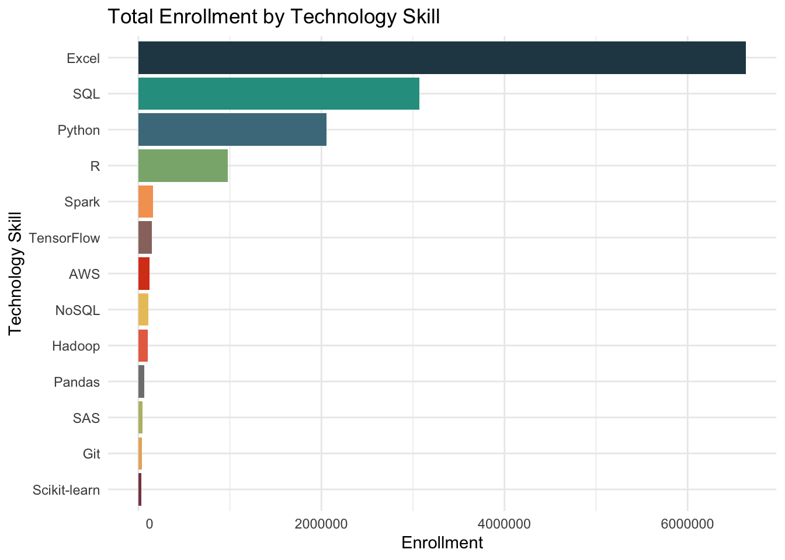
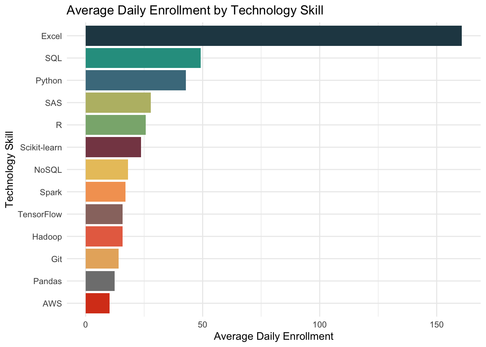
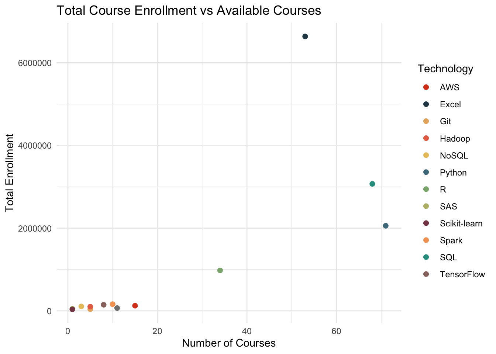

The most important skill to a data scientist is email
Author
Havis, Koon, Tillmawitz
library(tidyverse)
── Attaching core tidyverse packages ──────────────────────── tidyverse 2.0.0 ──
✔ dplyr 1.1.4 ✔ readr 2.1.5
✔ forcats 1.0.0 ✔ stringr 1.5.1
✔ ggplot2 3.5.1 ✔ tibble 3.2.1
✔ lubridate 1.9.3 ✔ tidyr 1.3.1
✔ purrr 1.0.2
── Conflicts ────────────────────────────────────────── tidyverse_conflicts() ──
✖ dplyr::filter() masks stats::filter()
✖ dplyr::lag() masks stats::lag()
ℹ Use the conflicted package (<http://conflicted.r-lib.org/>) to force all conflicts to become errors
library(knitr)library(kableExtra)
Attaching package: 'kableExtra'
The following object is masked from 'package:dplyr':
group_rows
library(zoo)
Attaching package: 'zoo'
The following objects are masked from 'package:base':
as.Date, as.Date.numeric
Introduction
ONET
The O*NET database includes information on skills, abilities, knowledge, work activities, and interests associated with occupations. This information can be used to facilitate career exploration, vocational counseling, and a variety of human resources functions, such as developing job orders and position descriptions and aligning training with current workplace needs.
For our analysis we have isolated Data Scientists and Statisticians as the primary occupations of interest. Note that Data Scientist is considered a “parent” occupation, and includes the sub-occupations of Business Intelligence Analyst and Clinical Data Managers. O*NET groups occupations according to how similar it finds their “work activities” to be. We will collectively refer to these occupations as “data scientists” going forward.
# Load all ONET datasource('../data/raw/load_onet_historical_data.R')
Using libcurl 8.3.0 with Schannel
Attaching package: 'curl'
The following object is masked from 'package:readr':
parse_date
Attaching package: 'janitor'
The following objects are masked from 'package:stats':
chisq.test, fisher.test
skills
The analysts behind O*NET data measure skills relevancy to an occupation in two ways; Level and Importance.
Level refers to the degree of expertise the job requires. For example, surgery might be a relevant skill for both a nurse and a surgeon, however the surgeon would require a much higher level in the skill.
Importance refers to how how many work activities require the use of such a skill. Using another example, Service Orientation would have a very high level of importance to a waiter in a restaurant, but perhaps a low level required (depending on the restaurant).
Both of these dimensions are rated on a scale of 1 - 5, with one being the lowest and five being the highest.
As we can see, the top five skills by both importance and level are Mathematics, Reading Comprehension, Critical Thinking, and Writing. None of these are particularly surprising on their own, but other skills commonly associated with data science are ranked much lower, such as Technology Design, Programming, and Systems Evaluation.
In general, we can see that the “soft skills” that are more focused on human interaction are generally more frequently applied and important in data science, including Speaking, Active Listening, and Judgement & Decision Making.
Abilities
Abilities differ from skills in that they refer more to an individual’s enduring attributes, and are less likely to be actively developed. You could think of abilities in this context as a person’s natural proclivities.
similar to skills, abilities are rated again by Level and Importance.
Following closely the trend we observed in the Skills data, we can see that handiness with numbers, as well as strong capacity to communicate with others, are both important and require a high degree of expertise for an aspiring data scientist.
Despite these similarities, we liked the abilities view as it more finely demonstrated the importance of “soft skills”, primarily those that focused on communication. We continue to see reinforcement for data scientists to invest in their writing and presentation skills!
Technology skills
Technology skills are associated with a given occupation based on requirements seen in relevant job postings.
“Hot Technology” indicates that this particular skill is popular across occupations, while “in demand” indicates requirements frequently included in job postings for the particular occupation of data scientist.
When looking at In Demand skills for data scientist, we can see those that are unique to the profession when Hot Technology is “N”. This indicates that experience in this type of software is not commonly required in today’s job market, however is highly sought after for data scientists specifically.
tech_skills |>filter(in_demand =="Y", soc_name =="data_scientist") |>select(commodity_title, example, hot_technology, in_demand) |>arrange(commodity_title) |>rename("Category"= commodity_title, "Software"= example, "Hot Technology"= hot_technology, "In Demand"= in_demand) |>kable() |>kable_styling(bootstrap_options ="hover") |>row_spec(c(8, 9, 10, 13, 15), background ="#B83F21")
Category
Software
Hot Technology
In Demand
Analytical or scientific software
SAS
Y
Y
Business intelligence and data analysis software
Apache Spark
Y
Y
Business intelligence and data analysis software
Microsoft Power BI
Y
Y
Business intelligence and data analysis software
Tableau
Y
Y
Data base management system software
Apache Hadoop
Y
Y
Data base management system software
NoSQL
Y
Y
Data base user interface and query software
Amazon Web Services AWS software
Y
Y
Data base user interface and query software
NumPy
N
Y
Data base user interface and query software
pandas
N
Y
Data base user interface and query software
PyTorch
N
Y
Data base user interface and query software
Structured query language SQL
Y
Y
Development environment software
Microsoft Azure software
Y
Y
Development environment software
Scikit-learn
N
Y
File versioning software
Git
Y
Y
Industrial control software
TensorFlow
N
Y
Object or component oriented development software
C++
Y
Y
Object or component oriented development software
Oracle Java
Y
Y
Object or component oriented development software
Python
Y
Y
Object or component oriented development software
R
Y
Y
Object or component oriented development software
Scala
Y
Y
Spreadsheet software
Microsoft Excel
Y
Y
Some notable examples include popular Python libraries such as Numpy, Pandas, PyTorch, and Scikit-Learn.
The usual suspects, which are more universally sought across occupations, include SQL, AWS, and Git.
We will see more of how technology skills relate to a given occupation, especially quantitatively, in the following section.
Additional Information
O*NET contains a vast store of interesting data related to many other occupations, and we strongly encourage others to explore if for nothing else than to satisfy your curiosity.
About O*NET - Read more on how O*NET Data is captured and analyzed O*NET Resource Center - Additional data, taxonomies, and methodologies O*NET Interest Profiler - Survey tool to profile your interests and align to different occupations
What skills are most valuable?
What skills are people training in?
Linkedin Learning is a skill development platform launched in 2016. It provides eLearning resources that focus on four main categories, Business, Technology, Creative, and Certifications. For this analysis, data was pulled from the Data Science and Artificial Intelligence topics in the Technology category.
Data Acquisition
To obtain this data, we used Python, Beautiful Soup, and Selenium to scrape the LinkedInLearning catalog for links to the main course pages. With the list of links, we then automated navigation to each main course page and scraped the overarching course topic, course title, description, published date, to-date enrollment, and skill tags.
The raw dataset contained skill tags as a list in the last column. These skills were separated and converted to their own individual record. Since Viewership is dependent on Published Date, the data was standardized by including the column Active Days which denote how many days the course has been active, based on the date of data acquisition and the date of course publication. YearMonth, which takes the year and month of course publication, was also included into the full dataset in the data cleaning process.
For consistency, the skills centered in this analysis follow the shortlist from the previous sections.
full_LL_dataset_onet_mapped <- full_LL_dataset %>%distinct(Title, Published, Skills, .keep_all =TRUE) %>%mutate(skills_onet =case_when( # rename the skills as named in LinkedInLearning to match onet data Skills =="R (Programming Language)"~"R", Skills =="Python (Programming Language)"~"Python", Skills =="GitHub"~"Git", Skills =="Amazon Web Services (AWS)"~"AWS", Skills =="Apache Spark"~"Spark", Skills =="Excel Dashboards"~"Excel", Skills =="Excel Modeling"~"Excel", Skills =="Microsoft Excel"~"Excel", Skills =="Pandas (Software)"~"Pandas", Skills =="Scikit-Learn"~"Scikit-learn", Skills =="SAS (Programming Language)"~"SAS", Skills =="SQL"~"SQL", Skills =="Hadoop"~"Hadoop", Skills =="NoSQL"~"NoSQL", Skills =="TensorFlow"~"TensorFlow" )) %>%na.omit() # remove all data that does not fall within these categoriestech_colors <-c("R"="#8AB17D", "Python"="#4A7A8C", "Git"="#E7B16C", "AWS"="#D9421C", "NoSQL"="#E9C46A", "SAS"="#BABB74", "Spark"="#F4A261", "Hadoop"="#E76F51", "Excel"="#264653", "SQL"="#2A9D8F", "pandas"="#47856A", "Scikit-learn"="#864653", "TensorFlow"="#99756F")
For the base analysis, we can look at total viewership by Technology Skill. We can see the top four skills are Excel, SQL, Python, and R, with Excel leading by a significant margin. The top four skills appear to have significantly higher enrollment than the other top skills identified by the O*NET data.
Skill_Enrollment_onet_mapped <- full_LL_dataset_onet_mapped %>%group_by(skills_onet) %>%summarize(avg_total_daily_enrollment =sum(Enrollment)/sum(active_days), total_enrollment =sum(Enrollment)) Skill_Enrollment_onet_mapped %>%ggplot(aes(x = total_enrollment, y =reorder(skills_onet,total_enrollment), fill = skills_onet)) +geom_bar(stat="identity") +scale_fill_manual(values = tech_colors ) +guides(fill ="none") +theme_minimal() +scale_x_continuous(labels =function(total_enrollment) format(total_enrollment, scientific =FALSE)) +labs(title ="Total Enrollment by Technology Skill", y ="Technology Skill", x ="Enrollment")

Using the number of active days per course, we can standardized the data by taking total enrollment per course and divide by total active days. This accounts for newer courses that may have lower total viewership but high daily enrollment with respect to when the course was published. When looking at average daily enrollment, we can see that Excel again far surpasses the other technology skills. However, the gap between all other technology skills is closed significantly. Using this method, we can see that the top five technology skills are Excel, SQL, Python, SAS, and R.
Skill_Enrollment_onet_mapped %>%ggplot(aes(x = avg_total_daily_enrollment, y =reorder(skills_onet,avg_total_daily_enrollment), fill = skills_onet)) +geom_bar(stat="identity") +scale_fill_manual(values = tech_colors ) +guides(fill ="none") +theme_minimal() +labs(title ="Average Daily Enrollment by Technology Skill", y ="Technology Skill", x ="Average Daily Enrollment")

These results, specifically the lessened gap between each skill, can be explained by the fewer number of available courses or more recent publication dates. Both of these variables will affect the number of Active Days, which was used in the standardization of data. Taking a look at number of courses per technology skill, we can see that this is true for skills like SAS and Scikit-learn, which only had one course each resulting in a high average daily enrollment.
Skill_Count_onet_mapped <- full_LL_dataset_onet_mapped %>%group_by(skills_onet) %>%summarize(count =n())Skill_Count_onet_mapped %>%ggplot(aes(x = count, y =reorder(skills_onet,count), fill = skills_onet)) +geom_bar(stat="identity") +scale_fill_manual(values = tech_colors ) +guides(fill ="none") +theme_minimal() +labs(title ="Number of Courses by Technology Skill", y ="Technology Skill", x ="Courses")
We can also look at the count of courses graphed against the total enrollment, where we would expect total enrollment to increase as course quantity increases. If each technology were equally in demand for Linkedin Learners, we would expect the data to exhibit a linear trend. We can see a clear outlier with Excel, having a high count but a much higher total enrollment that does not appear to follow the pattern of the data. SQL also appears to be a potential outlier, though not as pronounced.
Skill_joined_count_avg_enroll <-inner_join(Skill_Count_onet_mapped,Skill_Enrollment_onet_mapped, by ="skills_onet")Skill_joined_count_avg_enroll %>%ggplot(aes(x = count, y = total_enrollment, color = skills_onet)) +geom_point(size =2) +scale_color_manual(name ="Technology",values = tech_colors ) +guides(fill ="none") +theme_minimal() +scale_y_continuous(labels =function(total_enrollment) format(total_enrollment, scientific =FALSE)) +labs(title ="Total Course Enrollment vs Available Courses", y ="Total Enrollment", x ="Number of Courses")

Finally, we can look at the evolution of demand in upskilling for each technology over time by determining what technology skills eLearnings are released on the platform over time. From this data, we can see that there are four technology skills, Python, SQL, Excel, and R which appear to have a catalog that is growing at a faster rate than the other skills.
Skill_Binned_onet_mapped <- full_LL_dataset_onet_mapped %>%group_by(YearMonth,skills_onet) %>%summarize(count =n(), .groups ='drop') %>%group_by(skills_onet) %>%mutate(ccount =cumsum(count)) Skill_Binned_onet_mapped %>%ggplot(aes(x = YearMonth, y = ccount, color = skills_onet)) +geom_point(size =2) +geom_line() +scale_color_manual(name ="Technology",values = tech_colors) +labs(title ="Course Addition over Time", y ="Total Number of Courses", x ="Publication Date")
Warning: The `trans` argument of `continuous_scale()` is deprecated as of ggplot2 3.5.0.
ℹ Please use the `transform` argument instead.
With the above results, it is important to consider the universal use of each of these skills. While Excel is present in many of the courses cataloged for “Data Science” and “Artificial Intelligence”, it is also considered a basic software skill used in many other professions. This might cause skewed numbers in favor of higher enrollment in Excel courses.